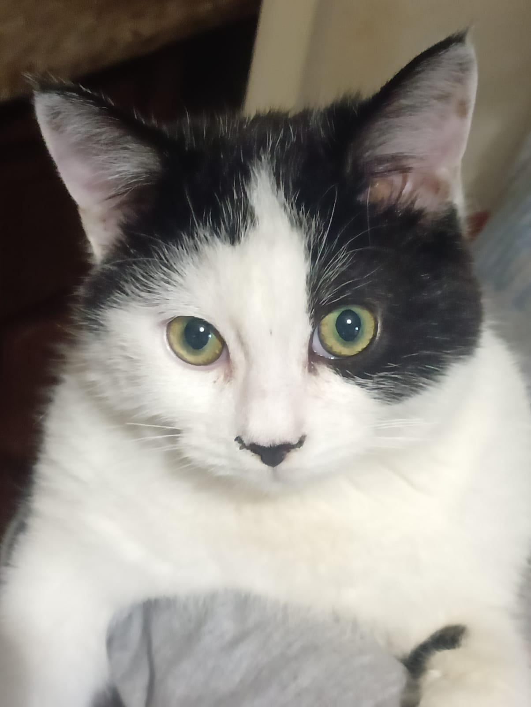

Однажды холодным дождливым вечером ноября к нам во двор пришёл котёнок.
Выглядел он примерно так.
Мы отмыли его, причесали и оставили жить с нами.
Теперь он выглядит так.

Наш котик ест достаточно много. Его растущий организм требует большого количества еды. Особенно он любит:
Иногда он может даже погрызть кусочек хлеба, если больше ничего нет.
У нашего Барсика есть множество любимых занятий. А именно:
Мы очень любим нашего котика и надеемся, что он проживёт с нами ещё много лет!